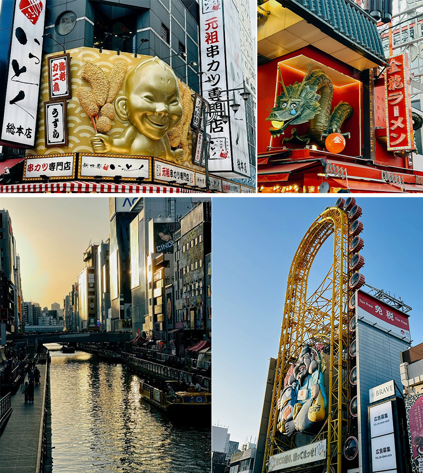
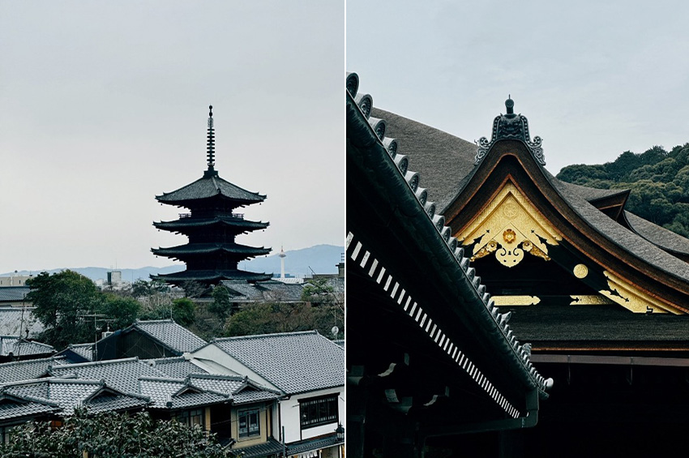

這次的日本之旅，我選擇了關西地區最經典的路線-大阪與京都雙城遊。五天四夜的行程，讓我深刻體會到日本傳統與現代交織的獨特魅力。從莊嚴肅穆的大阪城，到熱鬧繁華的心齋橋，再到古色古香的清水寺，每個景點都給我留下了難忘的回憶。
大阪城：戰國風雲的歷史見證
第一站來到大阪城，這座豐臣秀吉於1583年開始建造的城堡，是日本三大名城之一。從地鐵站出來，遠遠就能看見那標誌性的天守閣聳立在藍天之下，金光閃閃的裝飾在陽光下格外耀眼。走過護城河上的極樂橋，我被眼前的景象深深震撼。巨大的石垣由一塊塊巨石堆砌而成，最大的「蛸石」表面積達到59.43平方公尺，讓人不禁讚嘆古代工匠的智慧與毅力。
心齋橋：購物天堂與美食聖地
從歷史的沉澱中走出，我來到了大阪最繁華的商業區——心齋橋。這條全長約600公尺的商店街，從江戶時代就是大阪的商業中心。走在拱廊下，兩旁琳瑯滿目的商店讓人目不暇接，從國際精品到藥妝店，從傳統工藝品到最新潮流服飾，應有盡有。最讓我驚喜的是心齋橋的美食文化。道頓堀川沿岸的霓虹燈招牌是大阪的標誌性景觀，巨大的螃蟹、章魚燒、拉麵等立體招牌爭奇鬥艷。我在這裡品嚐了正宗的大阪燒，看著師傅在鐵板上熟練地翻動著麵糊，香氣四溢，最後淋上特製醬汁和美乃滋，撒上柴魚片，那種鹹甜交織的味道至今難忘。
夜晚的心齋橋更是熱鬧非凡。年輕人聚集在各個居酒屋和卡拉OK店，上班族在小酒館裡釋放一天的壓力。我特別喜歡在戎橋上看著來往的人群，感受這座城市的脈搏。這裡的節奏很快，但又不失人情味，店員們總是面帶微笑，即使語言不通，也會耐心地用手勢和簡單的英文幫助遊客。
購物方面，我發現日本的服務真的做到了極致。在一家藥妝店購買護膚品時，店員不僅詳細介紹產品功效，還主動幫我辦理退稅手續。許多店家都配有會說中文的店員，讓購物變得更加便利。不過也要提醒大家，心齋橋的人潮真的很多，尤其是週末和假日，建議早上或平日前往會有更好的購物體驗。
|  |
清水寺：千年古剎的靜謐時光
第三天，我搭乘電車前往京都，目標是被列為世界文化遺產的清水寺。從清水道慢慢往上走，兩旁都是保存完好的傳統建築，許多遊客租借和服漫步其中，彷彿穿越回了平安時代。清水寺建於公元778年，已有超過1200年的歷史。最著名的清水舞台完全由139根巨大的櫸木支撐，沒有使用一根釘子，展現了日本傳統建築工藝的精髓。站在13公尺高的舞台上眺望，京都市區與遠山層疊，春天的櫻花、夏天的新綠、秋天的紅葉、冬天的白雪，每個季節都有不同的風情。
寺內的音羽瀑布是另一個必訪景點。三道清泉分別代表學業、戀愛和長壽，遊客們排隊用長柄杓接水飲用，祈求願望實現。據說不能貪心，只能選擇一道泉水飲用，否則願望就不會實現。在清水寺，我還體驗了地主神社的「戀愛占卜石」。兩塊相距18公尺的石頭，據說如果能閉著眼睛從一塊石頭走到另一塊，戀愛就會順利。看著許多年輕人在朋友的指引下小心翼翼地嘗試，現場充滿了歡笑聲，這種輕鬆愉快的氛圍讓原本莊嚴的寺廟多了幾分人間煙火氣。
清水寺周邊的二年坂、三年坂也值得細細品味。這些保留著江戶時代風貌的石板路，兩旁開著各式各樣的特色小店。我在一家百年老店品嚐了抹茶冰淇淋和八橋餅，濃郁的抹茶香配上甜而不膩的紅豆餡，是京都才有的味道。許多店家還販售清水燒、京扇子等傳統工藝品，每一件都是匠人心血的結晶。
|  |
旅行感悟
這次關西之旅讓我深刻體會到，日本是一個善於保護傳統同時擁抱現代的國家。在大阪城，我看到了歷史建築與現代科技的完美結合；在心齋橋，我感受到了商業繁榮背後的人文關懷；在清水寺，我體會到了千年文化傳承的厚重感。
日本的細節之處最讓人感動。無論是地鐵站清晰的指示標誌、隨處可見的自動販賣機、乾淨整潔的街道，還是店員們九十度的鞠躬，都體現了這個民族對完美的追求。即使是在人潮洶湧的景點，大家也都自覺排隊，保持安靜，這種秩序感讓旅行變得格外舒適。如果要給準備去關西旅行的朋友一些建議，我會說：給每個景點留出充足的時間，不要趕行程。大阪城至少需要半天，心齋橋可以安排一整天（包括晚上），清水寺連同周邊最好也預留大半天。另外，學幾句簡單的日語會讓旅程更加順利，即使只是「謝謝」、「對不起」、「請問」這樣的基本用語，也能拉近與當地人的距離。
這趟旅程不僅是一次觀光，更是一次文化的洗禮。我帶回的不只是照片和紀念品，更多的是對這個國家的理解和尊重。關西的魅力在於它的多樣性——既有大阪的活力奔放，又有京都的優雅含蓄，這種反差讓人著迷，也讓人期待下一次的重逢。